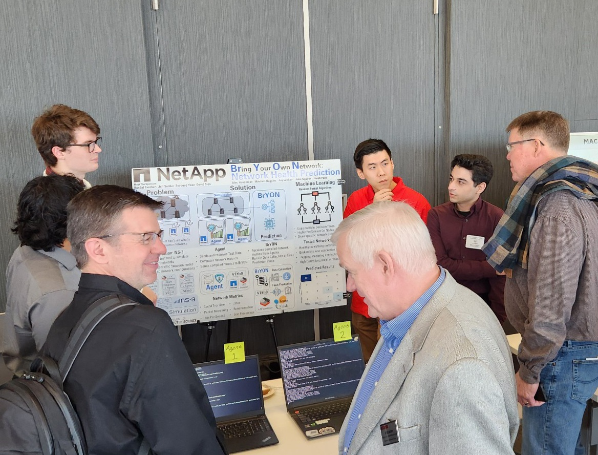

Note: This project involved transferring IP rights to NetApp.
For my senior design class, myself and four others were sponsored by NetApp to design them a proof-of-concept system that uses machine learning to detect and classify black-box network failures.
Our solution used small low-level programs called "agents" to sample network traffic and compile networking statistics to send to a central node that we called BrYON. BrYON then takes this data and runs it through a machine learning model which is trained to detect and classify failures. Training and testing was done in a custom network simulation suite so that we could easily test out different topologies and failure types.
The system worked quite well, we were able to sucessfully classify non-catastrophic failures in our testing set 97% of the time. Catastrophic failures were difficult to detect, but this is due to a design flaw we will discuss later.
I mostly worked on the high-level system design, the low-level agent design, and set up the different simulation topologies. I was the technical lead for the first few iterations as I had been exposed to similar technologies before, so my job was to lay most of the groundwork that we would build upon.
We learned a lot from working on this project, our biggest takeaway was that all parts of a system should be carefully deliberated upon before beginning. We ran into a lot of problems with the program that containerized our software for testing in our simulation, and this was becuase we never thought that this component was necessary to fully design since it did not have a role in the final product.
We also realized near the end of the project that a more distributed design would have worked better. This would have made our system better at detecting catastrophic failures, and eliminates the network itself as a single point of failure. (Consider: Agents send network health data through the network itself, so if the network is unhealthy, how can we trust that our data will make it?)